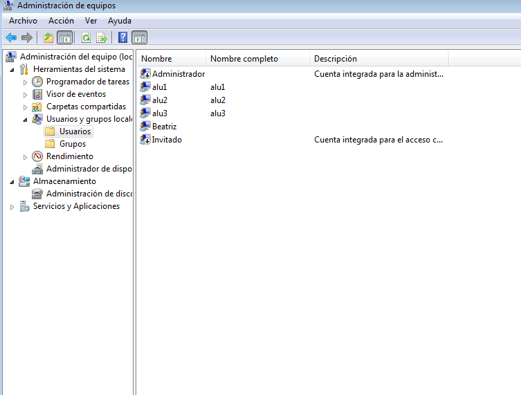

- Módulo: Sistemas Operativos
- Título del trabajo A1: Registro de eventos local
- Componentes del grupo: Beatriz de Armas Salvador
- Curso Académico: 2013/2014
- Fecha de entrega: 16 de Junio de 2014
Debemos activar unas directivas de seguridad, para auditar los inicios de sesión al sistema
- Poner como nombre NETBIOS de la máquina:
- "1er-apellido-del-alumno"+2 => Windows 7
- "1er-apellido-del-alumno"+1 => Winodws 2008 Server
- Crear los usuarios alu1, alu2 y alu3.

- Hacer las siguientes acciones:
- Entrar al sistema con alu1 de forma correcta.
- Intentar entrar con alu2 poniendo la clave mal.
- y no entrar con alu3.
Buscar en el sistema, la herramienta visor de sucesos. Comprobar cómo se registran los eventos anteriores.
Exportar los eventos a ficheros CSV. Incluir fichero en la entrega con el nombre "registro-windows.csv".
- Se recomienda usar GNU/Linux Debian.
- Para cambiar el nombre de la máquina, hacemos:
- # hostname "1er-apellido-alumno"+3
- # hostname (Para comprobar)
- Instalar el programa Webmin.
- Primero lo inentamos vía gestor de paquetes y/o apt-get install.
- También podemos hacerlo descargando el paquete deb de la web de Webmin. Para instalarlo usamo dpkg.
- Si tenemos problemas de dependencias de paquetes, instalando el paquete deb, entonces ejecutamos el siguiente comando para resolverlas:
- Para iniciar el servicio Webmin, ejecutamos:/etc/init.d/webmin start
- Para acceder al programa Webmin, abrimos un navegador web y ponemos como URL
- Vamos a analizar los ficheros de log con la herramienta anterior. Para ello vamos a las opciones del menú "System -> System Log".
5.1 Configuración de Syslog
Realizar las siguientes tareas:
- Consultar el fichero /etc/rsyslog.d/50-default.conf
- Añadir la siguiente línea al fichero de configuracion /etc/rsyslog.d/50-default.conf
- local0.* /var/log/nombredelalumno/prueba-local.log
- Con el usuario root, crear el fichero "/var/log/nombredelalumno/prueba-local.log" vacío
- Ahora debemos reiniciar el servicio rsyslog, para que se recargue la nueva configuración.
- etc/init.d/rsyslog stop
- /etc/init.d/rsyslog start

5.2 Comprobar Rsyslog
- cat /var/log/nombredelalumno/prueba-local.log: Esto nos muestra que el fichero de log está vació por el momento.
- Crear varios registros mediante el comando logger, usando varias prioridades diferentes y otros valores. Por ejemplo, probar los parámetros de logger -i, -t, etc.
- Consultar los mensajes registrados, e indicar sobre un ejemplo el significado de cada campo de una línea concreta del log.
Ahora vamos a configurar logrotate para generar rotaciones de nuestro fichero de log. Para ello crearemos el fichero /etc/logrotate.d/nombre-del-alumno con el siguiente contenido:
- Vamos a generar muchos mensajes de log en el fichero de registro de eventos:
- Podemos usar el script proporcionado por el profesor, cuya función es la de generar cientos de mensajes de log hacia el nuevo fichero de registro. Modo de uso:
- Descargar fichero "send-messages.sh".
- Dar permisos de ejecución: "chmod +x send-messages.sh".
- Ejecutar el script "./send-mesagges.sh".
- Podemos invocando el comando siguiente para aumentar el tamaño del registro de log con la información contenida en un fichero de texto: logger -p local0.notice -t ETC-MOTD -f /etc/motd
- Comprobar que el fichero de log ha crecido de tamaño.
- Para que se dispare la rotación de log (logrotate) automáticamente podemos reiniciar el equipo. Sin reiniciar el equipo, podemos ejecutar manualmente el programa de rotación logrotate de la siguiente forma: /usr/sbin/logrotate -f /etc/logrotate.conf
- Comprobar que el fichero cambia de tamaño, y que efectivamente se ha producido la rotación de los ficheros de log.